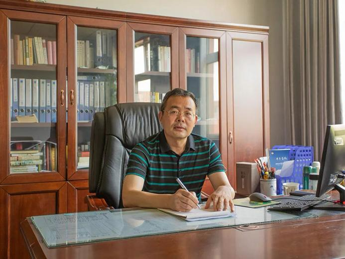

🏫 学校简介
禹城市华奥私立学校（简称禹城市华奥高中）创办于2002年，位于山东省禹城市禹石商贸街628号（徒骇河畔），是一所涵盖高中、初中、小学三个学部的民办全日制学校。学校设计规模34个教学班，现有在校师生1300余人，占地60余亩。 学校秉承‘为党育人、为国育才，为学生谋未来”的办学宗旨，坚持“精品化、特色化、国际化”的办学定位。现任校长为王孟柱，名誉校长为鲁秋。学校推行小班额教学，开展分层分类教学及日语、俄语等小语种零起点课程，并开设音乐、美术、体育等特长专业。学校实行寄宿制、封闭式管理。先后获评德州市文明单位、全国青少年校园足球特色学校、山东鲁能泰山足球学校人才输送基地、禹城市教育教学先进单位、德州市十佳民办学校党组织、平安校园建设先进单位、禹城市“两新”组织党建工作示范单位、全国写字实验学校等称号。办学成果方面，学校坚持“低进高出，因材施教”，2024年高考本科上线再创佳绩，2023年有学生被211大学海南大学录取。
学校实行专家治校，校长由原禹城一中业务校长王孟柱担任，名誉校长由北大资源艺术传媒学院特聘教授、中国冷香画派冰雪梅花画家鲁秋担任。学校设有名师工作室2个，教研团队11个。政治教研组长李冬雪在2024年获得禹城市中小学道德与法治教学比赛二等奖，地理教研组长李俊苗曾连续获得统考优秀教师。学校实行小班额教学，每班人数不超过44人，开设有日语、俄语等小语种课程，实行高中零起点教学模式，并设有美术、书法、音乐、舞蹈、服装表演、空乘、体育等艺体专业课程。学校设立华奥国际班，该班已被英国牛津国际认证中心确定为“牛津国际AQA考试国际考点”。学校采用分层教学模式，实行寄宿制、封闭式管理，禁止学生携带电子通讯产品入校。学生宿舍配备洗浴室、空调、洗衣机、吹风机等设施，食堂使用当日食材，后厨操作透明。学校实行“青蓝工程”教师培养和奖学、助学制度。
自创办以来，学校始终坚持立德树人根本任务，秉承“以人为本、全面发展、质量立校、特色强校”的办学理念，以培养品德优良、基础扎实、特长突出、具有国际视野的新时代青少年为目标，不断完善办学条件，优化管理模式，提升教育教学质量，逐步形成了文化教育与特色教育并重、国内升学与国际通道并行的多元化育人体系。
2018年，学校经德州市教育局批准正式举办普通高中教育，填补了禹城市民办高中教育的重要空白，为区域学子提供了更加丰富、优质的升学选择。目前学校办学规模稳定，在校师生千余人，校风严谨、学风浓厚，赢得了家长、社会与教育主管部门的高度认可。
🌳 校园环境
校园整体规划科学合理，教学区、运动区、生活区、活动区分区清晰，功能齐全。校内绿树成荫、环境整洁，文化长廊、宣传展板、励志标语随处可见，营造了浓厚的育人氛围。
学校配备现代化教学楼、标准实验室、多媒体教室、图书室、美术室、舞蹈室、书法教室等专用功能教室，满足多样化教学需求。运动场地设施完善，拥有标准田径场、篮球场、乒乓球场等，为学生体育锻炼和课外活动提供充足保障。
学生食堂干净卫生、营养配餐，宿舍温馨舒适、管理规范，24小时后勤服务与安保值守，全方位保障学生在校学习、生活安全有序，让学生安心、家长放心。

乒乓球场
👨🏫 师资力量
学校高度重视教师队伍建设，坚持“引名师、强教研、重培养”的原则，组建了一支结构合理、业务精湛、爱岗敬业、富有爱心的专业化教师团队。现有专任教师均具备相应教师资格，本科及以上学历达标率100%，中高级教师、骨干教师、学科带头人占比高，教学经验丰富，教学能力突出。
学校定期组织教师参加各级培训、教研活动、优质课评比与外出交流，不断提升教师专业素养与课堂教学水平。同时建立完善的考核激励机制，激发教师工作热情，打造一支师德高尚、业务过硬、家长信赖、学生喜爱的优秀教师队伍。
全体教师坚持以生为本，尊重差异、因材施教，用心关注每一位学生的成长与进步，用责任与爱心陪伴学生全面发展，为学校教育教学质量稳步提升提供坚实支撑。

华奥教育总督、原禹城一中业务校长-王孟柱同志
📖 教育教学
学校坚持以教学为中心，狠抓课堂效率，落实常规管理，构建高效课堂模式。针对不同学段、不同基础学生实施分层教学、个性化辅导，帮助学生夯实基础、提升能力、突破难点，切实提高学业成绩。
在开齐开足国家课程基础上，学校积极开设书法、美术、舞蹈、音乐、日语等特色课程，丰富课程体系，发展学生兴趣特长，促进德智体美劳全面发展。
学校定期开展文艺汇演、体育比赛、主题活动、社会实践等，丰富校园文化生活，锻炼学生综合能力，培养学生团队协作、责任担当与创新精神，让学生在活动中成长，在实践中成才。
🏅 学校荣誉
办学多年来，禹城华奥私立学校凭借规范的管理、优异的教学质量、鲜明的办学特色，先后荣获多项荣誉称号，包括民办教育先进单位、教育教学质量先进学校、德育工作先进集体、平安校园示范校、规范化办学单位等。
学校在特色办学与国际教育领域成果显著，成功获得英国牛津国际AQA考试中心授权，成为官方认证国际考点，为学生搭建了直通海外高校的正规通道，进一步提升了学校品牌影响力与区域竞争力。
各项荣誉既是对学校办学成果的肯定，也是持续奋进的动力。学校将继续坚守教育初心，深耕细作，不断提升办学品质，努力打造让社会满意、家长放心、学生成才的优质民办学校。
🎖️ 学生荣誉
学校注重学生全面发展与个性成长，积极组织学生参与各级各类学科竞赛、文体比赛、艺术展演、综合素质评选等活动，大批学生在比赛中斩获佳绩，展现了良好的精神风貌与综合素养。
多名学生先后获得学习标兵、优秀学生、优秀班干部、美德少年、学科竞赛奖项、文体特长奖项等荣誉，学业成绩与综合素质同步提升，为未来升学与发展奠定坚实基础。
🌍 国际部
华奥学校国际部是学校重点打造的特色教育板块，与英国嘉利山学院等海外院校建立深度合作关系，开设国际课程班，实行“国内课程+国际课程”双轨培养模式。
学生在校期间既可正常学习国内课程，参加国内高考，升入国内大学；也可通过国际课程学习与AQA考试，直接申请英国、澳大利亚、新西兰、马来西亚、港澳等国家和地区的高校，实现多元化升学。
国际部配备专业外籍教师与中方双语教师，全英文沉浸式教学环境，注重语言能力、学术能力与国际视野培养，为立志出国留学的学生提供安全、正规、高效的升学通道。
📢 招生信息
禹城华奥私立学校常年面向全市招收高中新生及插班生，国际部同步招生，欢迎广大适龄学生报名。
招生对象：高一新生；高二高三插班生；国际课程班学生。
报名要求：品行端正、身心健康，符合相应学段入学年龄，携带户口本、学籍信息、相关证明材料到校登记报名，额满为止。
学校提供寄宿与餐饮服务，管理严格、服务周到，家长可到校参观咨询，实地了解校园环境与教学情况。
学校地址：山东省德州市禹城市禹石商贸街628号